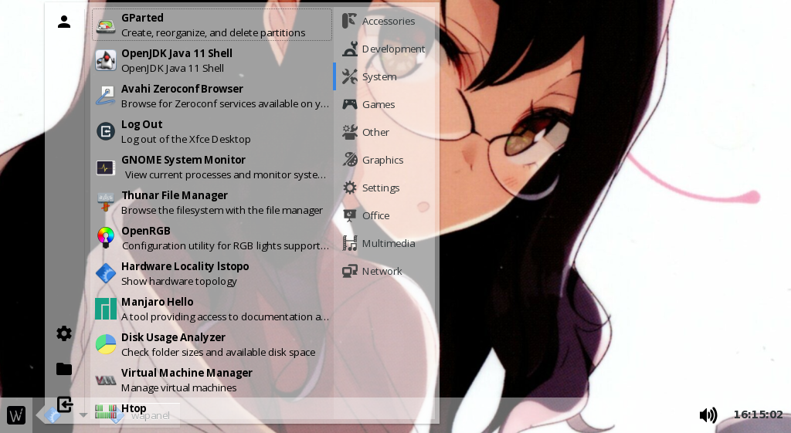
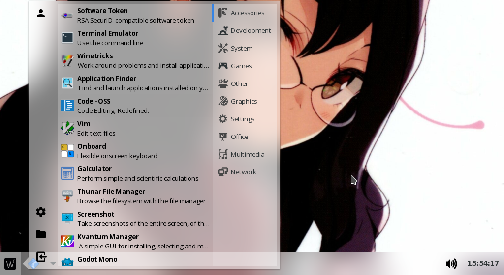

Example theme - Transparency/Blur
Warning! Will break on dark themes due to usage of background-color with 255 everywhere.
Also this should be considered as some working reference instead of full blown theme but it is usable as daily driver.
Fully transparent:
{kind=link}
With wayfire blur plugin:
{kind=link}
As you can see, it works best with some kind of blur.
.panel {
background-color: rgba(255, 255, 255, 0.4);
}
.task-switcher-context-menu,
popover {
background-color: rgba(255, 255, 255, 0.75);
border: none;
}
.app-finder-popover,
.app-finder-logout-popover {
background-color: rgba(255, 255, 255, 0.5);
border: none;
}
.clock-popover {
background-color: rgba(255, 255, 255, 0.9);
border: none;
}
.clock-popover calendar {
background: transparent;
}
.clock-popover calendar .day {
background: red;
}
.app-finder-popover notebook {
border: none;
}
.task-switcher button {
background-image: none;
background-color: rgba(255, 255, 255, 0.2);
border: none;
}
.app-finder:checked {
background-color: rgba(255, 255, 255, 0.3);
border: none;
border-radius: 0;
background-image: none;
}
.app-finder-popover box box:first-child button:checked {
background-color: rgba(255, 255, 255, 0.5);
border: none;
background-image: none;
}
.app-finder-category-notebook,
.app-finder-category-notebook tab,
.app-finder-category-notebook tabs,
.app-finder-category-notebook stack {
background-color: rgba(255, 255, 255, 0.0);
}
.app-finder-category-notebook header {
background-color: rgba(255, 255, 255, 0.35);
border: 0;
}
.app-finder-popover entry {
background-color: rgba(255, 255, 255, 0.5);
border: 0;
border-radius: 0px;
}
.app-finder-category-app-list list {
background-color: rgba(255, 255, 255, 0.25);
}